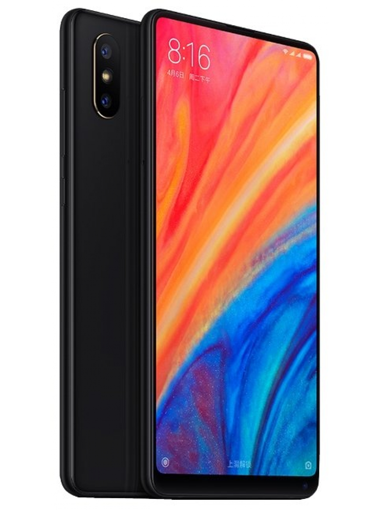

xiaomi mi mix 2s

Цена
Xiaomi Mi Mix 2S с 6+64 ГБ-34 990 р.
Xiaomi Mi Mix 2S с 6+128 ГБ-36 225 р.
Xiaomi Mi Mix 2S с 8+256 ГБ-40 320 р.
технические характеристики
ОС: Android 8 (Oreo) с фирменной оболочкой MIUI 9
Процессор: 8-ядерный 64-разрядный процессор Qualcomm Snapdragon 845 (SDM845), архитектура ARMv8, 4 ядра Kryo 385 Gold (2,8 ГГц) + 4 ядра Kryo 385 Silver (1,8 ГГц)
Графическая подсистема: Adreno 630
Оперативная память: 6 ГБ LPDDR4X
Память для хранения данных: 64 или 128 ГБ, UFS 2.0, слота для карт памяти нет
Экран: 5,99 дюйма, Full HD+ (2160х1080 точек, 18:9), ~ 403 точки на дюйм, защитное стекло Corning Gorilla Glass 4
Основная камера: сдвоенная, 12 МП (апертура f/1.8, типоразмер 1/2.55", размер пикселя 1,4 нm, четырехосевая оптическая стабилизация, фазовый автофокус с технологией Dual Pixel) + 12 МП (f/2.4, 1/3.4", 1,0 нм, без стабилизации, двукратный оптический
зум, фазовый автофокус с технологией dual pixel), двухтоновая вспышка.
Интерфейсы: Bluetooth 5.0, Wi-Fi 802.11 ac/b/g/n (2,4 ГГц + 5 ГГц), NFC, USB Type-C (USB 2.0), FM-радио нет
Сеть: GSM/GPRS/EDGE (2G), UMTS HSPA+(3G), LTE (4G) Cat 18/13, диапазоны 1/2/3/4/5/7/8/12/13/17/18/19/20/25/26/27/28/29/30/34/38/39/40/41
Две SIM-карты
Сенсоры: акселерометр, датчики освещенности и приближения, гироскоп, компас (датчик Холла), дактилоскопический сканер
Аккумулятор: несъемный, 3400 мА*ч, Quick Charge 3.0, быстрая зарядка до 50% за 35 минут
Габариты: 150,9 х 74,9 х 8,1 мм
Вес: 191 грамм
Цвета: черный, белый
© 2018 «Все права защищены»